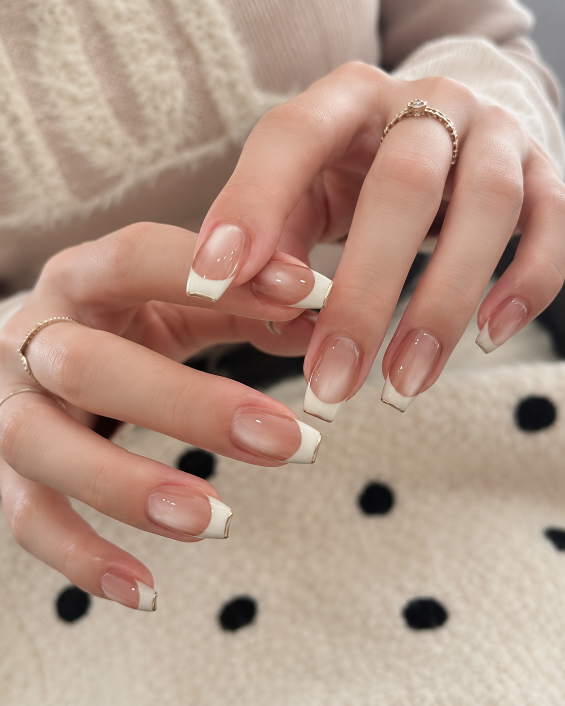
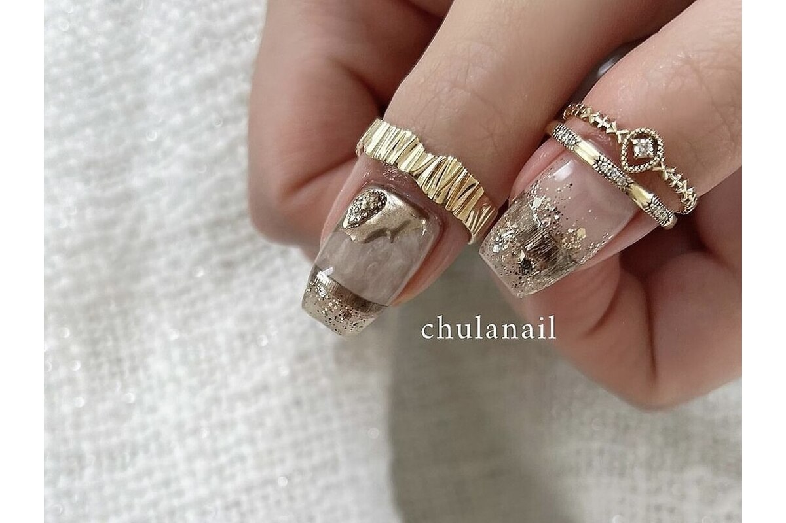
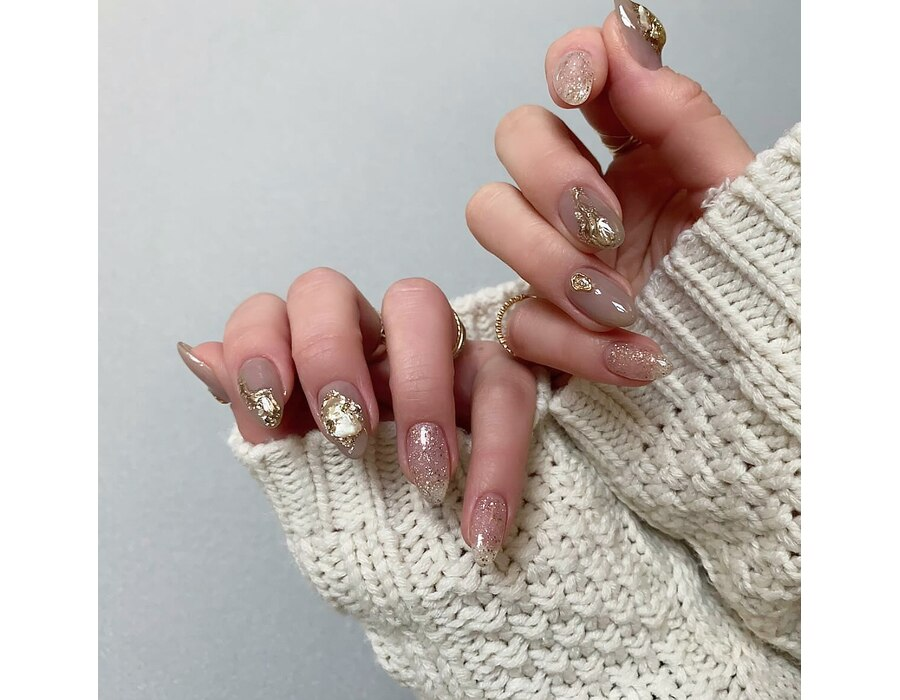
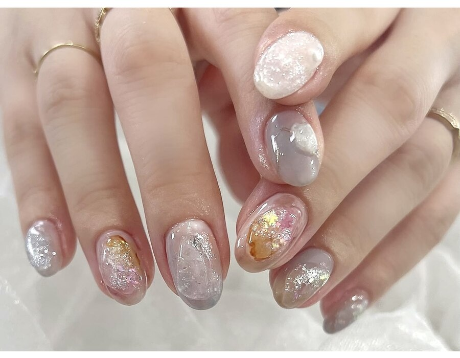
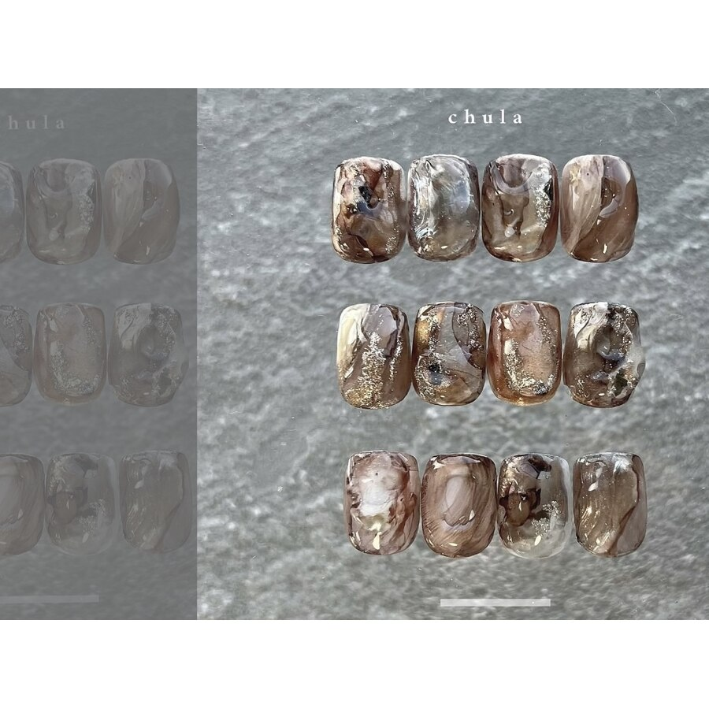
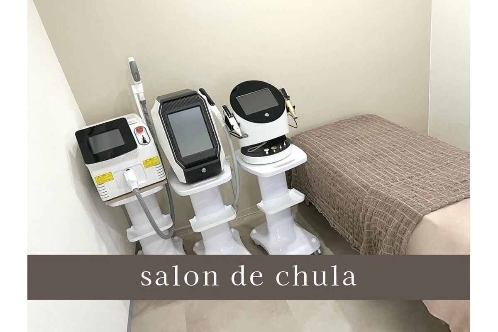
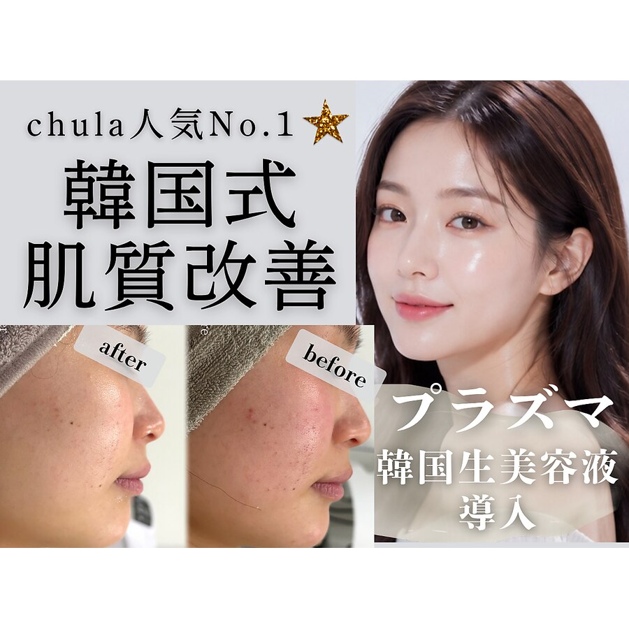
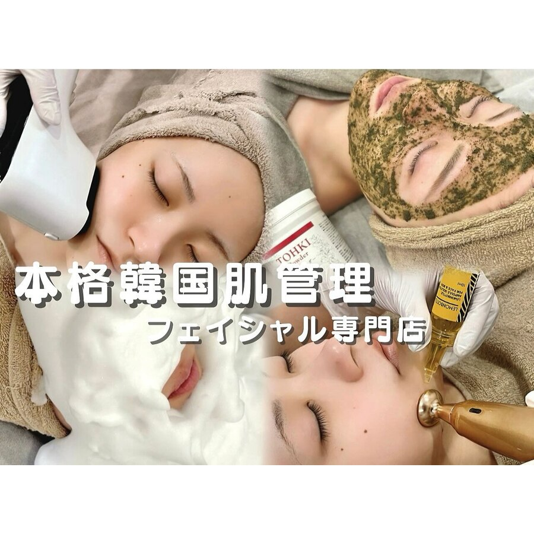
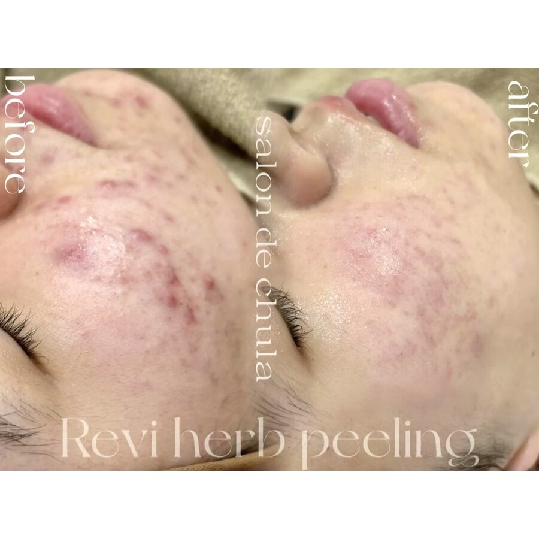
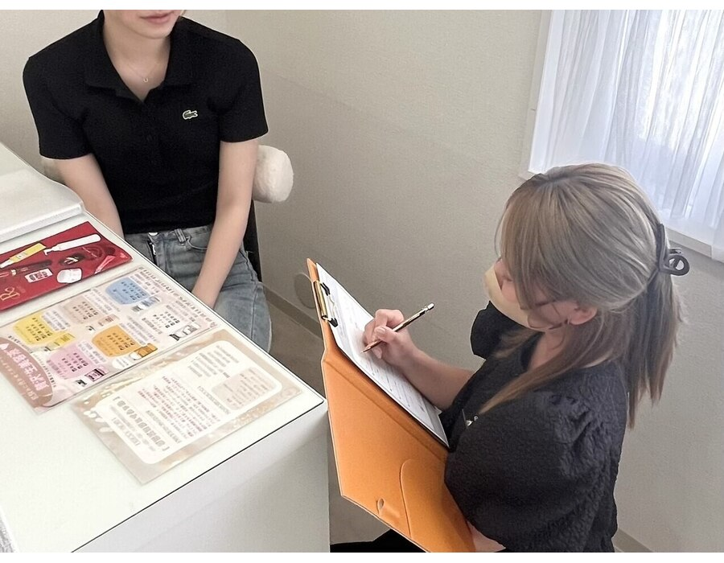

01NAIL SALON
chula nail
美しいフォルムと、心が弾むデザイン。
フィルイン専門の高技術サロン。持ちのよさと美しいフォルムにこだわり、ニュアンス、オフィス、ワンホン、持ち込みデザインまで理想の指先を叶えます。
- フィルイン専門
- 持ち込みデザイン対応
- ネイルスクール併設
KOSHI, KUMAMOTO
美しいフォルムをつくるネイルと、肌悩みに寄り添う韓国肌管理。それぞれの専門技術で、あなたらしい「きれい」を叶えます。


01 — ABOUT CHULA
chulaには、美フォルムとデザインにこだわるネイルサロンと、韓国の美容技術を取り入れたフェイシャルサロンがあります。一人ひとりの好みやお悩みを丁寧に伺い、無理のないご提案を大切にしています。完全予約制の落ち着いた空間で、自分のための時間をゆっくりとお過ごしください。
Nail artistry
& Korean beauty

01NAIL SALON
美しいフォルムと、心が弾むデザイン。
フィルイン専門の高技術サロン。持ちのよさと美しいフォルムにこだわり、ニュアンス、オフィス、ワンホン、持ち込みデザインまで理想の指先を叶えます。
02 — WHY CHULA NAIL
デザインだけでなく、正面・横・先端、どこから見ても整ったフォルムを大切にしています。爪の状態やライフスタイルを伺いながら、お客様に似合う形とデザインをご提案します。
指先がすっきり見えるよう、爪の形や厚み、光の入り方まで丁寧に整えます。
ベースを一層残して付け替えるフィルインに対応。継続してネイルを楽しみたい方にもおすすめです。
持ち込みデザインはもちろん、雰囲気だけを伝える「おまかせ」も歓迎。好みをくみ取り形にします。
個性派ニュアンス、きれいめ、オフィス、ワンホンまで、その日の気分に合う指先へ。
NAIL COLLECTION
きれいめから個性派まで、豊富な商材と細やかな技術でお好みの雰囲気に仕上げます。


DESIGN
色やパーツの組み合わせに迷う方も、スタッフと相談しながら決められます。お仕事や生活に合わせた扱いやすさも考え、細部まで丁寧に仕上げます。
デザインをInstagramで見る ↗
02KOREAN FACIAL
渡韓せずに、本場の韓国肌管理を。
プラズマ、ハーブピーリング、水光リフトなど、肌悩みに合わせた結果重視のケアをご提案。完全個室のプライベート空間で、自分史上いちばん好きな肌へ。
03 — KOREAN SKIN CARE
毛穴、乾燥、くすみ、ハリ不足、フェイスラインなど、一人ひとり異なる肌悩みに合わせてメニューをご提案します。初めての方にも施術内容を分かりやすくご説明します。
肌の状態に合わせた美容液導入と組み合わせ、うるおいと透明感のあるなめらかな印象を目指します。
剥離なしで受けやすいピーリング。毛穴の目立ちや肌のざらつきが気になる方におすすめです。
フェイスラインやハリ不足にアプローチ。内側から発光するような艶肌と、すっきりした印象を目指します。
AUTHORIZED SALON
話題の韓国美容を、正規取扱店ならではの安心感と丁寧なカウンセリングでご案内します。
韓国クリニック取り扱いNo.1。お肌の状態やお悩みに合わせて、ボラヨンを取り入れたケアをご提案します。
生美容液「ステイブ」の正規取扱店です。うるおいと艶のある、いきいきとした素肌を目指します。
BEAUTY COLLECTION
豊富な美容機器と韓国発の美容液から、肌の状態やお悩みに合わせたケアをご提案します。



FOR YOUR CONCERNS

PRIVATE SALON
施術中は、自分だけのリラックスタイム。落ち着いた空間でお肌と向き合い、ゆっくりお過ごしいただけます。敷地内に駐車場もございます。
フェイシャルメニューを見る04 — SALON INFO
RESERVATION
ご希望のサロンを選んで、空き状況をご確認ください。